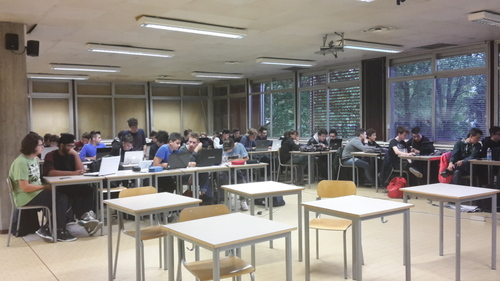

The fourth activity of our work-linked training took place at the school “Blaise Pascal” on October 20th.
The schedule of the day was defined by Nicola Bigi, who is a member of Tiwi.
Tiwi is a creative studio specialized in the design and production of video material for web and tv. Tiwi links images and words. It promotes, communicates and entertains with style, boldness and skill.
The company worked and still works in partnership with other important companies such as SKY or Ferrari and it created TV shows and commercials for them.

They explained to us what their company is and then they showed 2 videos they created: the first one was created for SKY (SKY Atlantic to be more specific) and the second one was created for the TV show “Beautiful”.
After watching those two videos, Nicola asked us to split into smaller groups and create our own videos concerning a subject of our choice and then, at the end, we were asked to present our projects to the others.